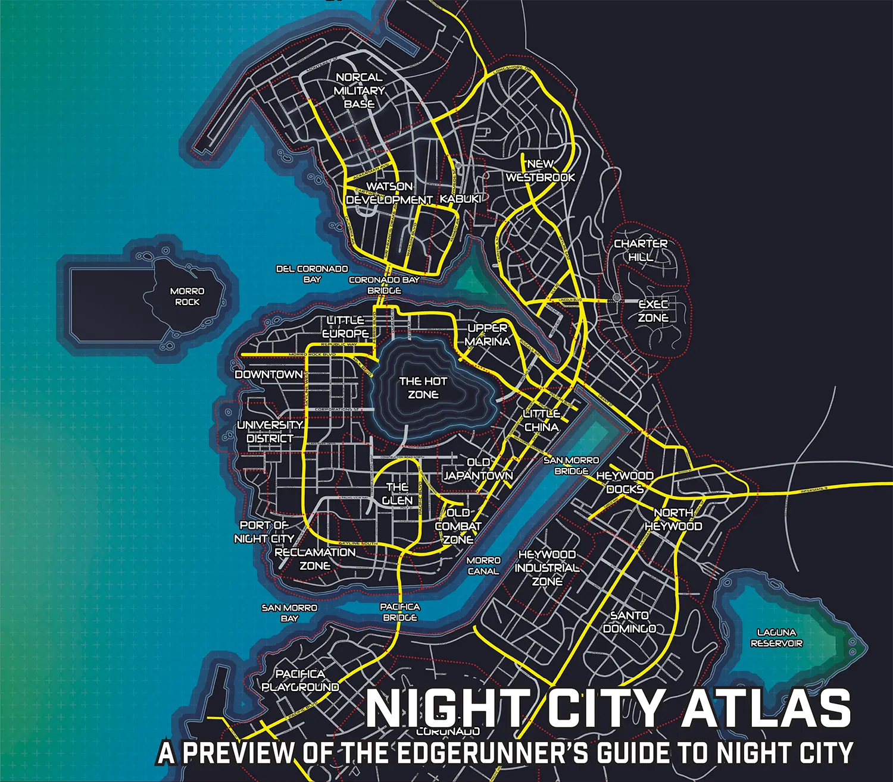

Bom Dia Night City!

Watson Development e Kabuki
O Watson Development, também conhecido como Watson Urban Reconstruction Zone, é um distrito planejado localizado no norte de Night City durante o Tempo do Vermelho.
2020 - 2030
A área onde ficava o Watson Development era originalmente o subúrbio de North Oak, incluindo algumas partes da vizinha Westbrook. Antes da Quarta Guerra Corporativa, esta região abrigava muitos cidadãos com rendimentos confortáveis, que fugiram durante o conflito. Após a guerra, refugiados de toda a área metropolitana inundaram os subúrbios vizinhos, construindo inúmeras cidades de tendas. Nesta área norte, no entanto, um conglomerado recém-formado de corporações predominantemente japonesas, conhecido como Esfera de Coprosperidade de Night City (NCCS), ajudou as comunidades asiáticas deslocadas dos antigos bairros de Old Japantown e Little China a se mudarem para lá.
Nos anos seguintes, a NCCS investiu nessa área, gastando muito dinheiro em infraestruturas antigas e novas e renomeando o distrito em desenvolvimento como Watson. Assim, apesar dos muitos refugiados residindo ali, a situação não era tão ruim quanto nos subúrbios vizinhos. Com o patrocínio da NCCS, a população japonesa deslocada se estabeleceu em um novo bairro que é atualmente um subdistrito de Watson conhecido coloquialmente como Kabuki, enquanto as partes sul e central do distrito foram povoadas principalmente pelos cidadãos deslocados da antiga Pequena China e de outros bairros danificados. A Esfera de Coprosperidade também contratou a gangue Garras de Tigre (que atuava publicamente como Kimen-Gumi) para proteger a comunidade japonesa em Watson e no resto de Night City.
2040
Em 2040, os primeiros megaprédios planejados para abrigar grande parte da população deslocada começaram a ser construídos aqui. Eles não foram os primeiros da lista, por isso seus números atribuídos eram tão altos, mas a Esfera de Coprosperidade pagou dinheiro para garantir que eles entrassem na lista. Também havia planos para reconstruir as linhas da NCART acima do solo e estendê-las para cobrir todos os distritos da cidade.
Em 2044, um organizador comunitário conhecido como Lucius Rhyne liderou uma greve trabalhista em todo o distrito, que culminou em uma eleição geral em 2045 que lhe permitiu obter o cargo de administrador do distrito. Naquele ano, Watson era um local em pleno desenvolvimento, projetado para se tornar o novo coração de Night City. Um monotrilho de alta segurança da NCART já havia sido construído para formar um circuito entre a Zona Executiva, Little Europe e o Watson Development. Os membros da NCCS construíram fábricas de alta tecnologia no norte do distrito, fornecendo aos moradores empregos estáveis.
Nos anos seguintes, imigrantes da China aproveitaram a oportunidade para se estabelecerem aqui também, transformando toda a área central e sul no que seria conhecido como a nova Pequena China do Distrito de Watson .
Gangues que atuam na região: Tiger Claws, Maelstrom.
Norcal Military Base
A Base Militar NorCal é um grande complexo militar localizado ao norte do centro de Night City.
2020 - 2030
Devido aos vastos cortes de financiamento do pós-guerra e a ascensão dos Estados Livres nos Estados Unidos no final da década de 1990 e início da década de 2000, o Pentágono recorreu ao conceito de bases centrais: grandes instalações bem defendidas que protegeriam uma área regional e dariam suporte a unidades de todos os quatro ramos das Forças Armadas dos EUA. A colossal Base Militar NorCal foi estabelecida em North Oak como parte do acordo que permitiu ao norte da Califórnia manter sua independência nominal da União como um Estado Livre, o que foi reconhecido em 2016. O governo da NorCal manteve uma postura de neutralidade em relação à base, pois ela também os protegeria de quaisquer grupos armados que viessem do norte para saquear água.
Em 2020, a Base Militar de NorCal era propriedade das Forças Armadas dos Estados Unidos e por elas administrada. O comandante da base era também o "Prefeito" da cidade de North Oak. As instalações da Base Militar incluíam um porto naval, uma base aérea e um depósito de veículos. O complexo também contava com um hospital bem equipado e um shopping center que atendia tanto ao pessoal da base quanto aos cidadãos de North Oak com uma variedade de produtos. Fora da cidade propriamente dita, tornou-se um subúrbio para oficiais militares aposentados e alistados, bem como para alguns funcionários civis associados de alguma forma à Base Militar.
2040
Durante o Tempo do Vermelho, após a Quarta Guerra Corporativa, a Base Militar NorCal passou a pertencer à Califórnia do Norte, embora fosse composta principalmente por uma mistura de várias unidades militares organizadas. Apesar de supostamente serem leais à Califórnia do Norte, eles fizeram um acordo com a Militech, trocando terras e acesso por treinamento e munições. Logo, a corporação instalou seus novos escritórios regionais lá.
Na década de 2040, o complexo militar fortemente fortificado estava praticamente isolado do resto de Night City. Como o acesso à base era restrito a pessoal não governamental, as reuniões com pessoas de fora eram realizadas em um prédio seguro situado entre os dois postos de controle de segurança na entrada. Uma seção da base era reservada para moradia dos funcionários da Militech.
New Westbrook e Charter Hill
New Westbrook é um subúrbio superlotado localizado a nordeste do centro de Night City durante o Tempo do Vermelho.
2020 - 2030
A área onde New Westbrook se situa era originalmente a comunidade suburbana da antiga Westbrook, além de partes das cidades de North Oak e Central Night City. Antes da Quarta Guerra Corporativa, essa região abrigava muitos dos cidadãos mais ricos da grande Night City. Após a guerra, muitos refugiados de toda a zona metropolitana inundaram os subúrbios vizinhos, construindo inúmeras cidades de barracas. A comunidade mais rica da antiga Westbrook era a Executive Estates, que, devido à superlotação de pessoas em busca de abrigo, decidiu construir a Executive Zone, uma porção das colinas que foi isolada do resto de Westbrook por meio de muros.
2040
Na década de 2040, New Westbrook era um subúrbio superlotado do centro de Night City, abrigando mais refugiados do que qualquer outra área vizinha. Apesar disso, projetos de desenvolvimento continuavam sendo planejados, incluindo megaeprédios para abrigar a população deslocada e planos para reconstruir as linhas da NCART acima do solo e estendê-las para cobrir todos os distritos da cidade.
Em 2045, as coisas não tinham mudado muito, cidadãos de alta renda ainda viviam ao lado das cidades de barracas e grande parte da miséria desses acampamentos cercava a comunidade murada da Zona Executiva. No entanto, um monotrilho de alta segurança da NCART já havia sido construído para formar um circuito entre New Westbrook, a Zona Executiva, Little Europe e o Watson Development.
Gangues que atuam na região: Tiger Claws, Bozos, Inquisitors.
Executive Zone
A Zona Executiva é um bairro fechado adjacente ao subúrbio de New Westbrook em Night City, durante o Tempo do Vermelho.
2020 - 2030
Após a Quarta Guerra Corporativa, muitos refugiados da região metropolitana de Night City inundaram os subúrbios vizinhos, construindo inúmeras cidades de barracas. A comunidade mais rica da antiga Westbrook era a Executive Estates, que, devido à superlotação de pessoas em busca de abrigo, decidiu construir a Zona Executiva, uma porção das colinas que foi isolada do resto de Westbrook por muros, protegida pela mais alta segurança que o dinheiro podia comprar.
Ao longo dos anos seguintes, New Westbrook cresceu em torno dos Executive States, tornando-se uma expansão urbana construída nos restos da original, ainda brilhando com brilho e glamour, mas repleta de cidadãos sem-teto que fugiram de outras áreas de Night City por causa da guerra ou que foram expulsos.
2040
Na década de 2040, a Zona Executiva era considerada um local de segurança e lazer para a elite corporativa, construída nas colinas ao redor de Night City. Era uma comunidade fechada e fortemente protegida, reservada exclusivamente para os mais ricos e suas famílias. Além de residências luxuosas, a área também contava com suas próprias instalações comerciais e de lazer, incluindo quadras de tênis e golfe, spas privativos e clubes. O Conselho Municipal considerava o nível de ameaça desse distrito "Executivo", o que basicamente significava que era uma das áreas mais seguras de Night City, senão a mais segura. Era patrulhada por policiais, e guardas corporativos incluindo a empresa de segurança privada Lazarus.
Em 2045, um monotrilho NCART de alta segurança foi construído para formar um circuito da Zona Executiva até Little Europe e o Watson Development. A estação na Zona foi isolada e exigia um passe de entrada. Muitas cidades de barracas ainda cercavam a comunidade murada, o que desagradava os moradores ricos. No entanto, o subdistrito de Charter Hill, relativamente pequeno, mas influente, já havia começado a ser desenvolvido ao redor da Zona Executiva.
Heywood e Santo Domingo
Heywood é um subúrbio superlotado localizado a sudeste do centro de Night City durante o Tempo do Vermelho.
2020
Esta área era originalmente a cidade industrial de Heywood, além de partes da vizinha Rancho Coronado. Antes da Quarta Guerra Corporativa, esta região abrigava as áreas industriais que foram sobrecarregadas durante a guerra quando multidões de refugiados se atropelaram para chegar a locais seguros como Heywood e Pacifica. Então ocorreu o Holocausto de Night City e refugiados de toda a área metropolitana inundaram os subúrbios vizinhos, construindo inúmeras cidades de tendas.
Ao longo dos anos seguintes, Heywood ficou superlotada de cidadãos sem-teto que fugiram de outras áreas de Night City por causa da guerra ou foram expulsos. Quando os nômades começaram a reconstruir Night City, eles construíram seu acampamento principal nesta região. Heywood tornou-se oficialmente um distrito em 2028.
2030 - 2040
O distrito de Heywood era um dos subúrbios superlotados do centro de Night City, abrigando uma grande porcentagem de sua população. Em 2035, o Conselho de Night City votou para estabelecer a Zona Industrial de Heywood como um distrito separado.
Com o tempo, a população de Heywood começou a se dividir com base na riqueza e no poder, com os ricos se concentrando nas áreas do norte do distrito de North Heywood e Heywood Docks, enquanto os pobres viviam no sul em Santo Domingo. Em 2038, o distrito de Heywood foi oficialmente dividido em 2 subdistritos principais sendo Santo Domingo e Heywood Norte. Projetos de desenvolvimento em andamento ainda estavam sendo planejados nessas áreas, incluindo megaprédios para abrigar a população deslocada e planos para reconstruir as linhas da NCART acima do solo e estendê-las para cobrir todos os distritos da cidade.
Gangues que atuam na região: 6th Street, Bozos, Inquisitors, Aldecaldos.
Heywood Industrial Zone
A Zona Industrial de Heywood é um dos distritos durante o Tempo do Vermelho, Localizado a sudeste do centro de Night City .
2020 - 2030
A área onde Heywood se localizava era originalmente a Heywood Industrial Zone. Após a Quarta Guerra Corporativa, essa região ficou sobrecarregada quando multidões de refugiados se aglomeraram para chegar a locais seguros como este. Então ocorreu o Holocausto de Night City e refugiados de toda a área metropolitana inundaram os subúrbios vizinhos, construindo inúmeras cidades de tendas. Ao longo dos anos seguintes, Heywood ficou superlotada de cidadãos sem-teto que fugiram de outras áreas de Night City por causa da guerra ou que foram expulsos. Esta área de Heywood era fortemente industrializada e, apesar dos inúmeros sem-teto que ali residiam, continuou a funcionar como tal sendo em 2035 separada em um distrito independente.
2040
Na década de 2040, assim como o resto de Heywood, a Zona Industrial é um subúrbio superlotado do centro de Night City. Mesmo assim, ainda era uma das maiores, senão a maior, área industrial da metrópole em funcionamento. Estava repleta de armazéns, equipamentos de construção, fábricas e docas com navios de carga abandonados. Projetos de desenvolvimento em andamento ainda estavam sendo planejados, incluindo megaeprédios para abrigar a população deslocada e planos para reconstruir as linhas da NCART acima do solo e estendê-las para cobrir todos os distritos da cidade. Atualmente essa área é chamada por moradores locais de Arroyo.
Gangues que atuam na região: 6th Street, Bozos, Inquisitors.
Rancho Coronado
Rancho Coronado é um subúrbio superlotado localizado ao sul do centro de Night City durante 0 Tempo do Vermelho.
2020 - 2030
Rancho Coronado foi concebido como um local onde os trabalhadores de Night City pudessem morar e mesmo após a Quarta Guerra Corporativa, esse propósito não mudou muito. Embora, após o conflito, muitos refugiados da região metropolitana tenham inundado os subúrbios vizinhos, construindo inúmeras cidades de barracas no meio do que antes eram bairros residenciais seguros.
Durante os anos seguintes, Rancho Coronado tornou-se uma das áreas mais afetadas pelo mundo pós-guerra. Muitos dos bairros locais estavam repletos de cidadãos sem-teto que haviam fugido de outros lugares de Night City por causa da guerra, ou que haviam sido expulsos. Isso resultou em uma região repleta de campos de refugiados e cidades de barracas ocupando todos os espaços possíveis dos quais não foram despejados.
2040
Na década de 2040, Rancho Coronado era um subúrbio superlotado de Night City. A vasta extensão de antigas casas no estilo Beaverville havia sido quase toda tomada por acampamentos improvisados. Era lotado, assolado pelo crime e constantemente à beira do desastre. Embora projetos de desenvolvimento em andamento por toda Night City ainda estivessem sendo planejados, nenhum estava acontecendo nesta parte da metrópole e enquanto os outros distritos ganhavam um administrador municipal de alguma forma, ninguém no Conselho de Night City estava interessado em representar Rancho Coronado
Gangues que atuam na região: Voodoo Boys, Bozos, Inquisitors.
Pacifica Playground
Pacifica, também conhecido como Parque de Diversões Pacifica é um distrito urbano em reconstrução localizado no sul de Night City durante o Tempo do Vermelho.
2020 - 2030
Pacifica era originalmente uma área residencial de classe alta, situada entre o oceano e as colinas, famosa por seu setor de entretenimento, que incluía seu próprio parque de diversões, o Playland. Durante a Quarta Guerra Corporativa, multidões de refugiados se atropelaram para chegar a lugares seguros como Heywood e Pacifica. Então ocorreu o Holocausto de Night City, com refugiados de toda a região metropolitana inundando os subúrbios vizinhos e construindo inúmeras cidades de barracas. Ao longo dos anos seguintes, Pacifica perdeu seu status de entretenimento, com os antigos condomínios de praia desaparecendo, mas o Playland conseguiu sobreviver, proporcionando alegria para aqueles que podiam pagar para ir lá. Graças ao parque de diversões, corporações começaram a patrocinar o distrito. Assim, apesar dos muitos refugiados residindo aqui, a situação não era tão ruim quanto nos subúrbios vizinhos.
2040
Na década de 2040, Pacifica estava no meio de um desenvolvimento massivo, mas lento, sendo construído em torno do Playland, com projetos em andamento, como a reconstrução das linhas NCART acima do solo e sua extensão para cobrir todos os distritos da cidade.
Gangues que atuam na região: Piranhas, Voodoo Boys.
Upper Marina
Upper Marina é um distrito urbano em reconstrução localizado no centro de Night City durante o Tempo do Vermelho.
2020 - 2030
Antes da Quarta Guerra Corporativa, a área onde ficava a Marina Superior era originalmente dividida entre os Distritos da Marina, Centro Antigo, Porto Novo e Upper Eastside. Após a guerra, essa nova divisão administrativa também incorporou algumas áreas de outras seções vizinhas da cidade, incluindo alguns locais remanescentes do Centro.
2040
Durante a década de 2040, em meio ao período de reconstrução de Night City, Upper Marina era um distrito urbano movimentado, com uma mistura de antigas zonas industriais e bairros em estilo "internacional", construídos ao redor de uma marina relativamente bem conservada. Muitas das antigas docas ainda eram usadas para carga e descarga, um negócio operado principalmente por trabalhadores nômades e drones. No entanto, entre os navios atracados, ainda havia alguns cascos enferrujados de antes da guerra. Havia projetos de desenvolvimento em andamento, incluindo megaedifícios para abrigar a população deslocada e planos para reconstruir as linhas da NCART acima do solo e estendê-las para cobrir todos os distritos da cidade. Alguns bairros em Upper Marina eram sofisticados, com vários estabelecimentos luxuosos e ruas fortemente patrulhadas pela NCPD.
Gangues que atuam na região: Tiger Claws.
Little Europe e Downtown
A Pequena Europa é um distrito urbano em reconstrução localizado no centro de Night City durante o Tempo do Vermelho.
2020 - 2030
Antes da Quarta Guerra Corporativa, a Pequena Europa era um distrito localizado na área noroeste do centro de Night City, composto pelos distritos da Pequena Itália e Northside, embora esta nova versão também incorporasse grandes porções do vizinho West Hill. Essas áreas foram originalmente inspiradas na arquitetura europeia e americana antiga, incorporando elementos de cidades italianas e outras metrópoles norte-americanas, como Boston, Seattle e Nova York. Após a guerra, durante o período de reconstrução de Night City, houve a intenção de remodelar essa característica para que fosse acentuada nos moldes da arquitetura moderna da Europa Ocidental. Ao longo dos anos seguintes, Little Europe tornou-se um distrito em desenvolvimento e um importante centro populacional, sendo considerado uma nova área central de Night City após a perda de grande parte dos Distritos do Centro e Corporativo.
2040
Na década de 2040, a Pequena Europa era composta por bairros densamente interligados, formados por antigos edifícios de tijolos e altos arranha-céus. No entanto, a necessidade e as preocupações orçamentárias começaram a superar o planejamento original e o estilo europeu começou a ser substituído por uma arquitetura mais convencional. Havia projetos de desenvolvimento em andamento, incluindo megaedifícios para abrigar a população deslocada e planos para reconstruir as linhas da NCART acima do solo e estendê-las para cobrir todos os distritos da cidade.
Em 2045, o distrito estava dividido entre classes e épocas, com antigos edifícios de tijolos lado a lado com arranha-céus modernos. Nessa época, um consórcio de executivos e intermediários, autodenominado Câmara de Comércio, separou uma parte da Pequena Europa e a renomeou como Downtown, com a esperança de que um dia se tornasse o centro econômico da cidade. Nesse mesmo ano, um monotrilho de alta segurança da NCART já havia sido construído para formar um circuito entre a Zona Executiva, a Pequena Europa e o Watson Development.
Gangues que atuam na região: Bozos, Inquistors.
University District
O Distrito Universitário é um distrito urbano em reconstrução localizado no centro de Night City durante o Tempo do Vermelho.
2020 - 2030
Antes da Quarta Guerra Corporativa, o Distrito Universitário era uma área localizada na região sudoeste do centro de Night City, embora o novo distrito também incorporasse partes da vizinha West Hill. Originalmente, o antigo distrito era destinado principalmente a ser um espaço residencial confortável, com arquitetura que variava de casas de pedra marrom falsas a casas de estilo vitoriano, intercaladas com diversas pequenas lojas, restaurantes e comércios a uma curta distância a pé. Vale destacar que abrigava a notória Universidade de Night City e o Parque do Lago. Devido à proximidade com o Distrito da Cidade e o Distrito Corporativo, algumas partes do distrito foram severamente danificadas durante o Holocausto de Night City. Após a guerra, durante o período de reconstrução de Night City, o estreito Distrito Universitário foi fortificado devido a estar na borda da Zona de Combate de Night City .
2040
Na década de 2040, este distrito abrigava a única instituição de ensino superior ainda em funcionamento na metrópole, a Universidade de Night City. Devido à proximidade de uma Zona de Combate, gangues eram uma visão comum, tanto o Departamento de Polícia de Night City (NCPD) quanto a Segurança do Campus da NCU lutavam para mantê-las afastadas. Apesar disso, a reconstrução prosseguia e projetos de desenvolvimento em andamento ainda estavam sendo planejados, incluindo megaprédios para abrigar a população deslocada e planos para reconstruir as linhas da NCART acima do solo e estendê-las para cobrir todos os distritos da cidade.
Gangues que atuam na região: Philharmonic Vampires, Bozos, Inquisitors.
South Night City
South Night City é uma zona de combate sem lei localizada no centro de Night City durante o Tempo do Vermelho.
2020 - 2030
A área onde hoje se situa South Night City era anteriormente um porto industrial localizado na parte sul da cidade propriamente dita, na península. Devido à proximidade com Central Night City, o Distrito Sul também foi afetado pelo pequeno terremoto causado pelo Holocausto de Night City de 2023, que inundou e liquefez algumas áreas da expansão urbana. Após a Quarta Guerra Corporativa, muitos refugiados de toda a região metropolitana migraram para os subúrbios vizinhos, construindo inúmeras cidades de barracas, inclusive em South Night City.
Ao longo dos anos seguintes, enquanto outras áreas conseguiram manter a lei de alguma forma, os subdistritos do sul da península (Port of Night City e Reclamation Zone) rapidamente caíram no desespero, com as gangues assumindo grande parte do poder. Como tal, logo foram rotulados como zonas de combate, incluindo grande parte do sul de Night City. Uma boa parte do distrito foi incorporada ao Glen, a nova sede do poder do governo central de Night City.
2040
Na década de 2040, essa área industrial e portuária estava repleta de gangues violentas e armazéns abandonados transformados em esconderijos. Alguns comércios e estabelecimentos conseguiram evitar serem engolidos pelo mar, atendendo principalmente às diversas gangues que reivindicavam o distrito. Esse status quo se devia principalmente ao administrador da cidade, Garven Haakensen, que priorizava o lucro em detrimento do trabalho. Embora isso não fosse incomum em Night City, Haakensen era mais descarado quanto a isso do que outros. Protestos entre o Centro Urbano em Reconstrução, ao norte, e as zonas de combate, ao sul, eram frequentes. A fronteira entre o sul de Night City e o Glen, ou Distrito Universitário, era especialmente problemática, pois gangues atacavam seus vizinhos, manifestantes reclamavam na fronteira e a polícia de Night City revidava contra ambos. O caos no distrito fez com que as construtoras construíssem um grande número de estacionamentos individuais onde os moradores locais podiam guardar seus veículos com segurança, em vez de estacioná-los nas ruas perigosas. O restante da área portuária, no entanto, ainda era usado como um importante ponto de acesso para cargas que entravam e saíam de Night City.
Gangues que atuam na região: Piranhas, Red Chrome Legion, Bozos, Inquisitors.
The Glen
Glen é um dos distritos urbanos em reconstrução, localizado no centro de Night City .
2030 - 2040
Durante o período de reconstrução de Night City, cerca de uma década após a Quarta Guerra Corporativa, o Conselho Municipal fez um acordo com as corporações para ajudar e financiar a reconstrução de Night City. Esse projeto incluía o Glen, que foi planejado como a nova sede do poder para o governo central. Os limites do Glen incorporavam áreas do sul de Night City, o Distrito Universitário e Little Asia.
Ao longo dos anos seguintes, muito dinheiro foi investido em Glen, que passou por enormes esforços de construção e na década de 2040, a nova Prefeitura e o Palácio da Justiça já estavam abertos ao público. Gradualmente, Glen se tornou um distrito em expansão, com a maioria dos prédios governamentais de Night City, bem como outras instalações corporativas e financeiras. Os projetos de desenvolvimento em andamento incluíam megaprédios para abrigar a população deslocada e planos para reconstruir as linhas da NCART acima do solo e estendê-las para cobrir todos os distritos da cidade. Apesar de estar cercado por Zonas de Combate em quase todos os lados, Glen era considerado um dos distritos mais seguros de toda a área metropolitana devido à presença constante de policiais do NCPD e empresas de segurança privada.
Old Japantown
A antiga Japantown é uma zona de combate sem lei localizada no centro de Night City durante o Tempop= do Vermelho.
2020 - 2030
A área onde ficava a antiga Japantown era originalmente dividida entre partes da antiga Japantown e do bairro da Pequena China. Durante a Quarta Guerra Corporativa, essa área foi gravemente afetada pelos tiroteios e outros eventos relacionados à guerra e logo o outrora popular centro cultural japonês mergulhou no caos e no desespero. Após o Holocausto de Night City, muitos moradores decidiram abandonar suas antigas casas, com as comunidades asiáticas se mudando para o mais seguro Watson Development, ao norte, graças à recém-criada Esfera de Coprosperidade de Night City.
Ao longo dos anos seguintes, enquanto outras áreas conseguiram manter a lei de alguma forma, os distritos do sul da península rapidamente caíram no desespero, com gangues assumindo grande parte do poder. Como tal, logo foram rotulados como zonas de combate, incluindo toda a antiga Japantown e seus distritos vizinhos.
2040
Na década de 2040, a antiga Japantown era uma extensa e perigosa zona de combate com poucos residentes além das muitas gangues ativas na região. Apesar disso, havia alguns locais bem defendidos, como o Centro Médico de Crise ou o Hotel Highcourt Plaza. Essas áreas onde ainda havia moradores eram consideradas ilhas de civilização em meio ao mar caótico de uma zona de combate. Uma presença importante na área era a dos Tyger Claws e seu subgrupo, o Kimen-Gumi, sendo que este último fornecia grande parte da segurança necessária. Em 2045, este distrito decadente ainda tinha alguns moradores tentando manter suas casas enquanto conflitos entre gangues aconteciam por toda parte. Durante esse tempo, Maelstrom estava procurando expandir suas operações para Old Japantown, o que os fez entrar em conflito com os Tyger Claws.
Gangues que atuam na região: Iron Sights, Tiger Claws, Maelstrom.
Old Combat Zone
A antiga Zona de Combate (originalmente conhecida como Zona Industrial de San Morro) é uma zona de combate sem lei localizada no centro de Night City durante o Tempo do Vermelho.
2010 - 2030
Durante o final da década de 2010 e início da década de 2020, Night City começou a se expandir recuperando terras a sudeste, aterrando uma porção de San Morro Bay. Essa nova área deveria se tornar um farol brilhante do industrialismo, mas a Quarta Guerra Corporativa interrompeu esses planos. Logo após o caos da guerra, esse distrito inacabado e abandonado se transformou em uma das piores zonas de combate que a metrópole já viu, expandindo-se rapidamente e absorvendo os quarteirões vizinhos. Nos anos seguintes, tornou-se a semente da qual cresceram as demais zonas de combate de Old Japantown, Little China e South Night City.
2040
Na década de 2040, a apropriadamente chamada Zona de Combate Antiga era a pior região de toda Night City, há muito abandonada a psicopatas e gangues perigosas. Por outro lado, grupos de edgerunners se esforçavam para reconstruí-la e, lenta mas seguramente, começaram a recuperá-la.
Gangues que atuam na região: Iron Sights, Bozos, Inquisitors, Rapineiros.
Little China
A Pequena China é uma zona de combate sem lei localizada no centro de Night City durante o Tempo do Vermelho.
2020 - 2030
A área onde hoje se situa a nova Pequena China era originalmente dividida entre partes da antiga Pequena China e grandes porções dos distritos de South City. Durante a Quarta Guerra Corporativa, essa área foi gravemente afetada pelos tiroteios e outros eventos relacionados à guerra. Após o Holocausto de Night City, muitos moradores decidiram abandonar suas antigas casas, com as comunidades asiáticas se mudando para o mais seguro Watson Development, ao norte.
2040
Na década de 2040, a Pequena China era uma extensa e perigosa zona de combate, com muitas pequenas comunidades lutando para sobreviver e repelir as gangues. Havia alguns locais bem defendidos, nesses lugares, a vida era quase normal.
Gangues que atuam na região: Iron Sights, Tiger Claws, Bozos, Inquisitors.
Morro Rock
Morro Rock é uma ilha na Baía de Del Coronado, ao largo da costa do distrito do Centro da Cidade de Night City.
2030 - 2040
Na década de 2030, Morro Rock ainda era uma pequena ilha desabitada ao largo da costa de uma metrópole em reconstrução. Em consulta com um grupo de investidores, o Governo de Night City concordou em assinar um contrato para estabelecer um propulsor de massa para espaçonaves orbitais, após o antigo aeroporto metropolitano ter sido negligenciado desde a guerra. A Orbital Air foi contratada para este projeto. O local para um projeto tão massivo foi escolhido como Morro Rock devido à sua estabilidade geológica, com o plano de construí-lo dentro da própria majestosa rocha. Quando concluído, o propulsor de massa permitiria o lançamento de espaçonaves em LEO (órbita terrestre baixa).
A construção começou em 2035, embora muitas decisões tenham sido descartadas durante a década seguinte. Para começar, os engenheiros geológicos que vieram do Quênia interromperam a construção do propulsor de massa, citando preocupações com a estabilidade do leito rochoso da área. Ao mesmo tempo, a administração da Orbital Air estava cética de que lançamentos sem foguetes pudessem ocorrer sem o apoio corporativo que garantisse sua lucratividade; assim, a OA propôs construir também um porto espacial civil. Nos anos seguintes, a OA conseguiu aproveitar brechas legais para cancelar a construção do propulsor de massa, e seus restos enferrujados e incompletos foram eventualmente desmontados. Dessa forma, o monopólio da megacorporação na colonização espacial permaneceu intacto. Também foi decidido demolir o próprio Morro Rock para construir a nova infraestrutura. Desta vez, porém, não foi a Orbital Air que deu permissão para demolir o Morro Rock, mas sim as autoridades de Night City. Com o terreno da ilha reorganizado e muito expandido para acomodar o Espaçoporto NCX , ele foi finalmente inaugurado em 2045. Agora, Morro Rock era uma ilha considerável a oeste de Night City, com instalações capazes de transportar pessoas e mercadorias pelo mundo e pelo espaço sideral.
Hot Zone
A Zona Quente foi a área de Night City mais afetada pelo Holocausto de 2023. Durante o Tempo do Vermelho, esta área metropolitana considerável era um terreno devastado, repleto de arranha-céus destruídos e retorcidos, veículos queimados e corpos sepultados dos desafortunados.
2040
A Zona Quente costumava ser o distrito corporativo central da cidade antes da bomba nuclear de 2023 destruir completamente toda a área. Nos anos seguintes, grande parte dos destroços foi aterrada na baía. Em 2045, seus vestígios ainda formavam uma paisagem assombrada de prédios destruídos, carros queimados e corpos enterrados nos escombros. Embora a radiação tivesse diminuído ao longo dos anos, ela ainda estava presente naquela época e a maioria das pessoas abandonou a área, entregando-a às gangues mais violentas.
Gangues que atuam na região: Maelstrom, Rapineiros, Bozos.